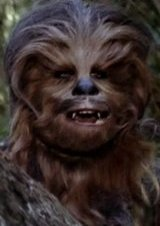

Animal Planet
Bigfoot

Bigfoot is an uncommon ape typically found in the Pacific Northwest. Most people have learned about this tremendous giant ape from the popular kid's cartoon series called Star Trek, featured as the main character, the pirate king Chewbacca. 
Other than occasionally seeing this giant ape in the wild, not much is known about this animal.